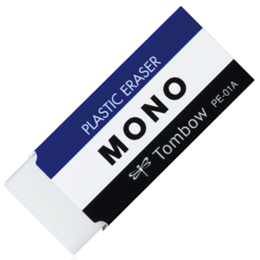
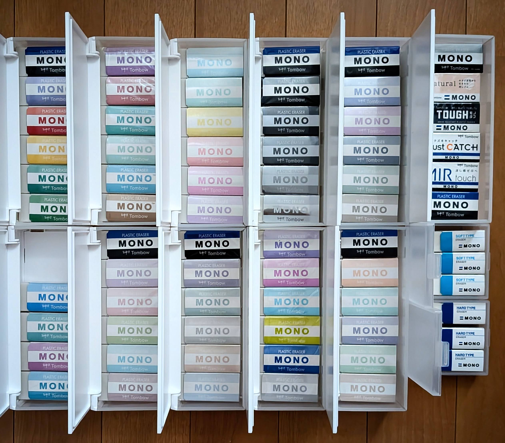

・自己紹介では書いていませんが、僕が好きな物はMONO消しゴムです。
・好きな理由は、みなさんご存じの青と白と黒のコントラストとか色合いが好きだからです。
色と言っても皆様は特に何も感じずに使っているMONO消しゴムだとは思いますが、僕の中ではこの色や形状がときめいて興味がわきます。
・ちなみに好きなMONO消しゴムの大きさは画像のPE-01AではなくPE-04Aの方が小さすぎず、大きすぎずでちょうどいい大きさなので好きです。

・MONO消しゴム………………………………1969年11月 発売 すべての原点。鉛筆のおまけから大ヒットして単独発売へ。
・MONO砂ラバー消しゴム……………………1972年 発売 インクを削って消す、歴史あるロングセラー。
・MONOノンダスト……………………………1995年 発売 消しクズをまとめる機能派の先駆け。
・MONOライト…………………………………2003年 発売 ぐにゃっと曲がりにくい、硬めで軽いタッチ。
・MONOゼロ……………………………………2007年8月 発売 世界最細水準のピンポイントノック式。
・MONOワン……………………………………2007年11月 発売 ノートの1文字消しに最適なリップ型。
・MONOエアタッチ……………………………2011年10月 発売 驚くほど軽い力で消せる驚きのアシスト系。
・MONOダストキャッチ………………………2011年10月 発売 クズを本体にくっつけて散らかさない黒。
・MONOスマート………………………………2012年8月 発売 ノートの1行を狙い撃ちできる5.5mmのスリム型。
・MONO消しゴム[ブラック]…………………2013年10月 発売 定番の安心感のまま、汚れが目立たないスタイリッシュな黒。
・MONOもっとかる～く消せる消しゴム……2014年11月 発売 さらにするすると軽いタッチを極めたモデル。
・MONO学習用消しゴム………………………2016年1月 発売 2B〜6Bの濃い鉛筆もきれいに対応。
・MONOスティック……………………………2017年11月 発売 ペンケースに入れやすいシャープペン感覚のノック式。
・MONOタフ……………………………………2019年11月 発売 「折れる」不満を徹底解決した強靭なモデル。
・MONOナチュラル……………………………2023年3月 発売 バイオマスを配合した地球に優しいエコロジー派。
・MONOカラーズ………………………………2024年4月 発売 通常の3色をパステルやグレージュにした最新作。
・僕はMONOの3色の組み合わせが好きと言ったのですが、他の色の組み合わせもあるんじゃないかということで、様々な色のMONO消しゴムを集めています。
・過去にMONO消しゴムが企業などとコラボした時に作成された別バージョンの色の消しゴムを集めています。
・画像のほかにもまだまだあって現状実質40種類以上あって最近は何が何の種類か忘れてます。
